古风淳朴，民俗醇厚大新高腔民歌
大新县壮族高腔民歌，以其音调高亢响亮及和谐的二重唱法特点，在广西山歌中独树一帜。大新高腔民歌也称为“诗雷”（壮语：最高、最响、最美之意）。歌手们在表演中采用“斗唱”形式，一般沿用一男三女斗、二男八女斗、十男三十女斗等各种不同唱腔组合。大新高腔民歌———“诗雷”以该县龙门乡三联村为代表。龙门高腔山歌有几百年历史，群众基础深厚，当地上至60岁的老人，下至十几岁的小孩，都能信口拈来。高腔主要以男女对唱为表现形式，尤其是青年男女求爱的表达方式。
每当有喜庆之事或逢年过节，当地群众以唱山歌来表达自己的喜悦心情，尤其是每年农历三月二十六是当地最为隆重的民间歌圩节，届时远近村民盛装汇集三联村寨赶歌圩，男女老少以山歌会友、待友，最多时有上万人同场对歌，场面十分壮观。如小伙子看上心仪的姑娘，便邀上亲朋好友到姑娘下榻的村寨以山歌求爱示情，姑娘也会邀上亲朋好友出谋献策以山歌考验小伙子的人品、才识等，形成妙趣横生又情意浓浓的山歌对唱场面，如情投意合时便通宵达旦歌声不断，有时一场山歌对下来，小伙子和姑娘的亲事也就定下来了。因此，对唱山歌深受当地村民喜爱，赶歌圩也逐渐发展成为当地最为隆重、热闹的民间盛事。
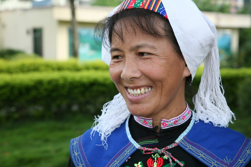
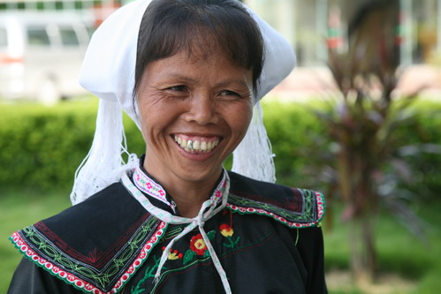
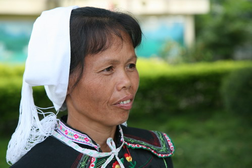
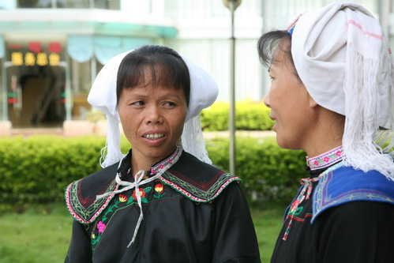
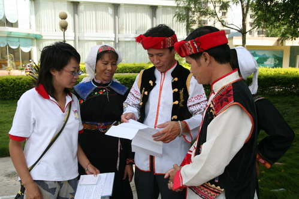
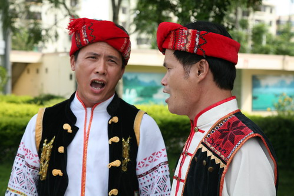
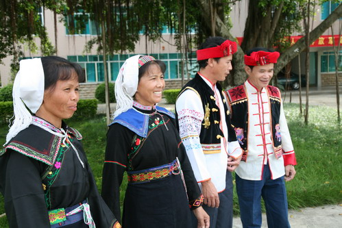
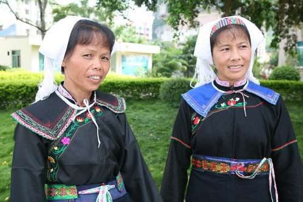
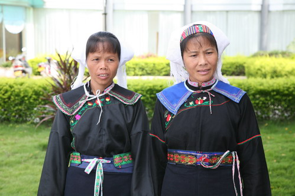
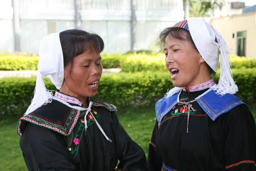
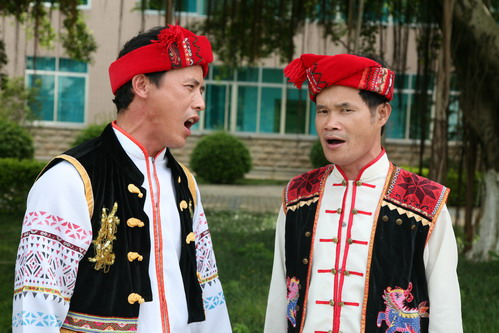